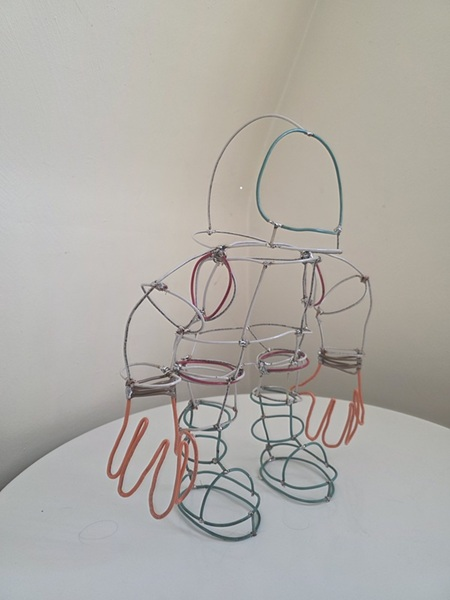
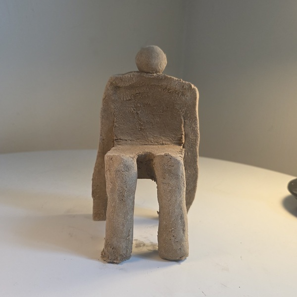
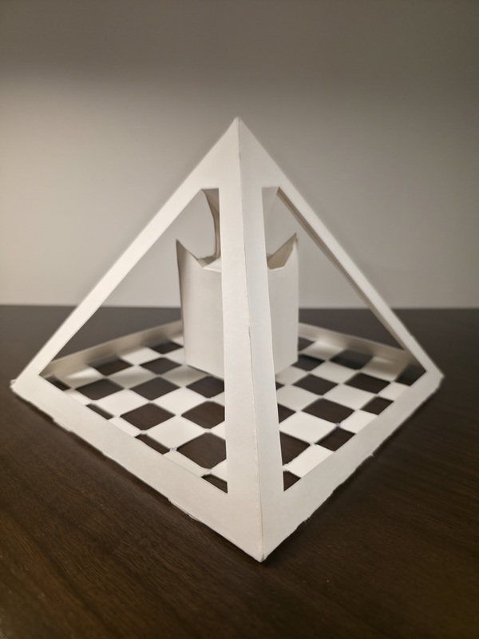

Astroman is a asculpture that celebrates us going back to the moon. While gravity works against the wire art to maintain its structure, astronauts fight the opposite effects and challenges.

Sandman is a sculpture that represents the art of leisure. It captures the essence of the awkward positions we find ourselves in during moments of relaxation.

The Devine Rook is a sculpture that recognizes the game of chess and its symbolic meaning. Looking from the outside in, pyramids represent the strategic depth and timeless appeal of this ancient game.